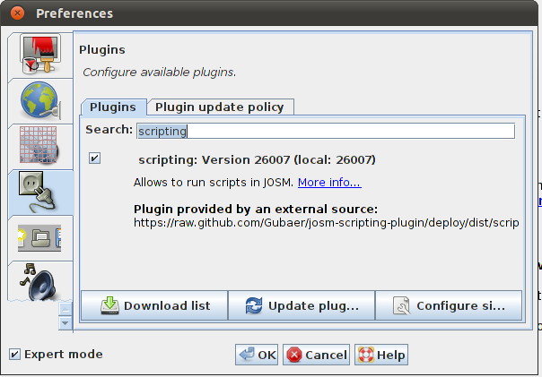

Home
Documentation
API
Install
GitHub
Install
Download and install
JOSM
Open the Preferences dialog and select the plugins tab.
Update the list of available plugins and search for
scripting
.

Activate the plugin and restart JOSM.